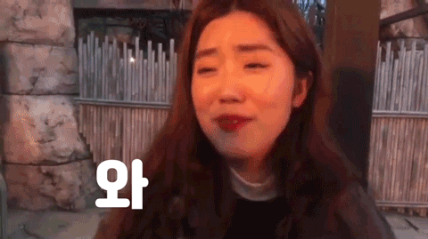

종강 한 당신, 떠나라
집으로 보낸 기숙사 짐을 풀러 갈 시간 없이 종강과 동시에 인천으로 향했다. 트리 장식이 곳곳에 보이던 크리스마스이브날 나는 친언니가 교환학생으로 있는 스페인 바르셀로나행 비행기에 몸을 실었다. 바르셀로나를 시작으로 약 한 달간 그라나다, 마드리드, 리스본, 포르투, 런던, 파리를 다녀왔다.
더욱 뜻깊었던 것은 아빠와 엄마 그리고 동생이 출국 일주일 전에 급하게 시간을 내어 스페인-포르투갈 여행을 함께했다는 점이었다. 가족 유럽 여행은 너무 재미있고 낭만적이었다. 더 길게 함께하면 좋았지만 각자의 자리로 돌아가야했기에 가장 한가한 대학생 둘은 셋을 보내고 여행을 더 이어나갔다.
버킷 리스트 중 하나를 이뤘어요!
우리나라 손흥민 선수가 뛰고 있는 토트넘 홋스퍼와 맨체스터 유나이티드 경기가 있던 날인 1월 13일, 나의 버킷리스트 중 하나인 프리미어리그 직관의 꿈을 이뤘다. 굿즈도 구매하고 스타디움을 구경하기도 했다. 내가 응원하는 팀이자 홈팀이었던 토트넘이 이겼다면 더 좋았겠지만 아쉽게도 그날 경기는 0:1로 졌다. 그래도 너무 행복했다.

어디로 가야하죠~ 아저씨♪
유럽 여행을 다녀오자마자 일본 박람회 준비로 집에 있을 겨를 없이 다시 짐을 싸 들고 안성으로 향했다. 기숙사생이라 안성에 지낼 곳이 없어 같은 팀인 희주 집에서 지내게 되었다. (희주야 고마워!) 희주와 정운이와 함께 박람회 출품작을 완성 하고 나니 출국 날이 되어 다시 캐리어를 끌고 나서야만 했다.
2월 중순이 돼서야…
모든 일정과 정리가 끝나고 보니 2월 중순이었다. 그제서야 산더미 처럼 쌓인 12월에 보냈던 기숙사 짐과 유럽여행, 일본 박람회 짐 모두를 풀 수 있었다. 그런데 곧 개강이니 다시 기숙사 입실할 짐을 챙기란다☆ 세상에..ㅜㅅㅜ 이번 겨울은 역마살 만땅 방랑자의 삶을 살았다.